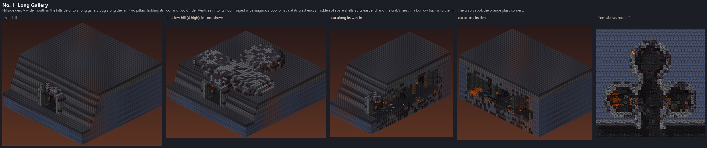
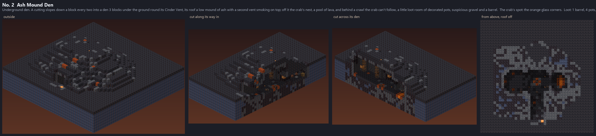
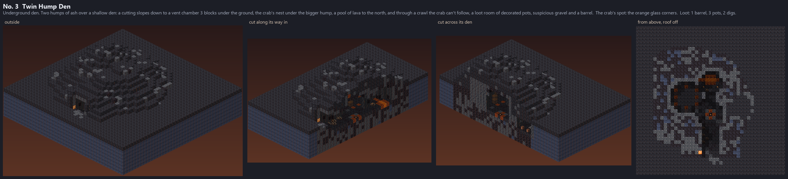

No. 7's style (a Cinder Vent den on a mound of basalt and magma, burrows off it, vents and walled-in lava), one
Cinder Hermit each. Hillside dens are built into a hill: the way in is in the hillside's face, the hill is the
roof; the cave is walled in by its own shell of rock, and where the hill is lower than the shell, the shell shows as a
rocky outcrop (the second picture: a hill half as high). Underground dens lie on flat land, their floor 3 blocks
down, their roof a low mound of ash over them, with a loot room behind a crawl the crab can't follow. No stairs or slabs
anywhere: steps are whole blocks. Every lava block is walled in under and on all four sides, every floor cell can be
walked to from the way in (at the south) and is lit. In the game: /dross showcase hermit_caves; in the
world, 1-2 in every Cinder Wastes area, hillside ones where the land rises (/dross goto hermit_cave).
The user kept three of round 2's five (November 3), the Long Gallery made bigger; round 2 as it was:
round2/. Round 1's seven: round1/.
A wide mouth in the hillside onto a long gallery dug along the hill, two pillars holding its roof and two Cinder Vents set into its floor, ringed with magma; a pool of lava at its west end, a midden of spare shells at its east end, and the crab's nest in a burrow back into the hill.
One crab spot, 6 lava blocks, its darkest floor cell lit 4.

A cutting slopes down a block every two into a den 3 blocks under the ground round its Cinder Vent, its roof a low mound of ash with a second vent smoking on top; off it the crab's nest, a pool of lava, and behind a crawl the crab can't follow, a little loot room of decorated pots, suspicious gravel and a barrel.
One crab spot, 3 lava blocks, its darkest floor cell lit 5, loot: 1 barrel, 4 pot, 2 dig.

Two humps of ash over a shallow den: a cutting slopes down to a vent chamber 3 blocks under the ground, the crab's nest under the bigger hump, a pool of lava to the north, and through a crawl the crab can't follow, a loot room of decorated pots, suspicious gravel and a barrel.
One crab spot, 3 lava blocks, its darkest floor cell lit 4, loot: 1 barrel, 3 pot, 2 dig.
